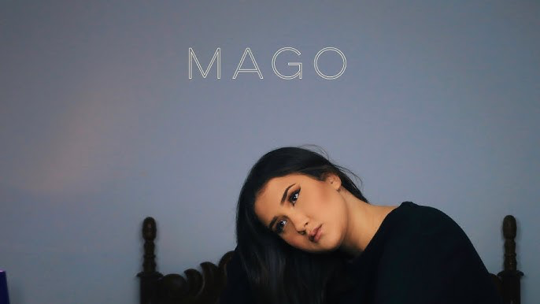

Cammie is a singer/songwriter from Rio de Janeiro. Music has always been in her life. Starting her music career at 12, she did a comercial for Leader store and since then has participated on The Voice Brasil 2016 becoming one of the semi-finalist, recording the soundtrack for series on Netflix and Globoplay and releasing many projects to show her music.
She brings vintage vibes with a touch of the new era so everyone can identify and she talks about our daily life, love, stories and much more. Her work goes from Pop and R&B to Soul music. Cammie has released singles, a project called “60 Dias Para Desapegar” to help people going through hard times at the end of a relationship and her latest release was the EP “Doce Como Bala” that already has over 2.8 million streams with 7 tracks and counts with features of R&B singer “Anchietx” and one of the biggest Brazilian Samba singers “Ferrugem”. You’re mine is the first single in English by Cammie, who’s been growing her fanbase not only in Brazil, but around the world.
Cammie has over 19 million streams and 50 k monthly listeners. She’s an independent artist ready to show the world that everything is possible when you love what you do.
| Song Name | Album | Official Artwork | ||
|---|---|---|---|---|
| Até te conhecer | Single | |||
| Mago | Single |  | ||
| Mais que uma amizade | Single | |||
Most Recent Albums
- Voyages
- Doce Como Bala
- The Journey Home